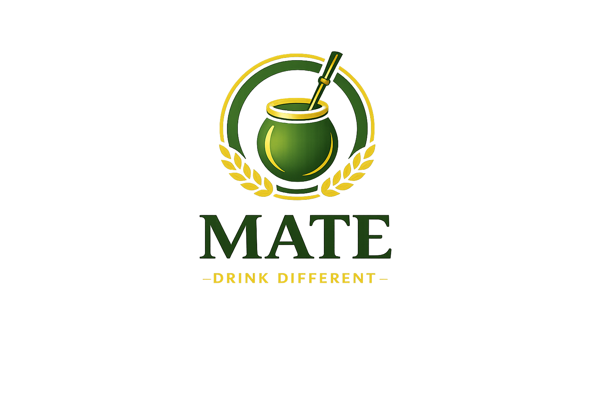

— Drink Different —
South America's original natural energy drink.
Now in Kurdistan & Iraq.
— What Is Mate —
Yerba Mate is a traditional South American drink that has been trusted for centuries — shared among friends, sipped through a bombilla, brewed with care. We bring that same spirit to the Middle East — Served Traditionally. Reimagined For Today. Enjoy It Classic, Hot, Or Iced.
— Benefits —
"The energy of coffee,
the health of tea,
the euphoria
of chocolate"
— Ancient Saying —